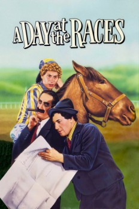

Country:United States, 109 minutes
Spoken languages:English
Genres:Comedy, Music
Director(s):Sam Wood
Writer(s):Robert Pirosh, George Seaton, George Oppenheimer
Video Codec:Unknown
Number: 6375

Certification:NR
Storyline:
Doctor Hugo Hackenbush, Tony, and Stuffy try and save Judy's sanitarium by winning a big race with a finicky horse owned by Judy's boyfriend Gil. There are a few problems. Hackenbush, who was recently put in charge of the sanitarium, isn't really a doctor, he's a veterinarian.
Cast:
Groucho Marx (as Dr. Hugo Z. Hackenbush), Chico Marx (as Tony), Harpo Marx (as Stuffy), Allan Jones (as Gil Stewart), Maureen O'Sullivan (as Judy Standish)
Medium: Media file,
Location: D:\Marx Brothers\1937 Marx Brothers A Day at the Races.mp4
Loaned: No
Aspect ratio: Unknown